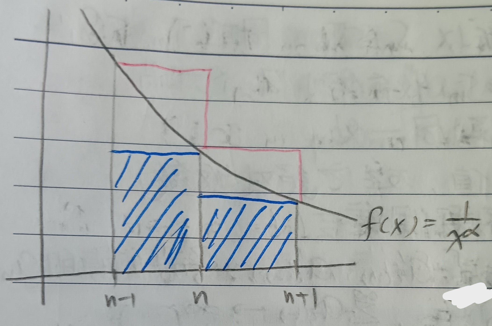

這份筆記是關於無窮級數的收斂判定方式。
無窮級數
定義 1：無窮級數和 (Infinite Series Sum)
給定無窮數列\(\{a_n\}\)，令 \[ S_n=a_1+\cdots+a_n \] 若\(\lim\limits_{n\to\infty}S_n\)存在，則說 \[ \sum_{n=1}^\infty a_n \] 收斂，且稱 \[ \sum_{n=1}^\infty a_n=\lim_{n\to\infty}S_n \]
註記 1-1
使用定義1的記號，以下四件事是等價的：
1. \(\{S_n\}\)收斂。
2. \(\{S_n\}\)是柯西序列。
3. \(\forall\epsilon>0\), \(\exists N\) s.t. 當\(n,m>N\)時，有\(|S_n-S_m|<\epsilon\)。
4.
對於所有\(n,m\geq N\)，有\(|a_m+a_{m+1}+\cdots+a_n|<\epsilon\)。
定理 2
若\(\sum\limits_{n=1}^\infty a_n\)收斂，則 \[ \lim_{n\to\infty}a_n=0 \]
證明：不然註記1-1中的第4.點馬上會爆炸。QED
註記 2-1
定理2中的條件是「必要條件」，不是「充分條件」。
交錯級數
定義 3
定義 3-1：絕對收斂 (Absolute Convergence)
若\(\sum|a_n|\)收斂，則稱\(\sum a_n\)絕對收斂。
定義 3-2：條件收斂 (Conditionally Convergence)
若\(\sum|a_n|\)收斂，但\(\sum a_n\)發散，則稱\(\sum a_n\)條件收斂。
定理 4：絕對收斂判定 (Absolute Convergence Test)
若\(\sum|a_n|\)收斂，則\(\sum a_n\)收斂。
證明：由於\(\sum|a_n|\)收斂，給定\(\epsilon>0\)，存在\(N\) s.t. \[ \left| |a_m|+|a_{m+1}|+\cdots+|a_n|\right|<\epsilon \] 對於所有\(n,m\geq N\)。而由三角不等式，有 \[ |a_m|+|a_{m+1}|+\cdots+|a_n|\geq\left| |a_m|+|a_{m+1}|+\cdots+|a_n|\right| \] 故 \[ |a_m+a_{m+1}+\cdots+a_n|<\epsilon \] 故\(\sum a_n\)收斂。QED
定義 5：交錯級數 (Alternating Series)
若\(\{a_n\}\)的任兩相鄰項都異號，則稱\(\sum a_n\)是交錯級數。
定理 5-1：交錯級數收斂判定 (Alternating Series Convergence Test)
對於交錯級數\(\sum a_n\)，若\(\{|a_n|\}\)單調遞減到\(0\)，則\(\sum
a_n\)收斂。
證明：WLOG，令 \[
\sum a_n=b_1-b_2+b_3-b_4+\cdots, b_i\geq 0, b_i\to 0
\] 顯然有：
1. \(S_1\geq S_3\geq
S_5\geq\cdots\geq S_{2n+1}\geq\cdots\)
2. \(S_2\leq S_4\leq S_6\leq\cdots\leq
S_{2n}\leq\cdots\)
又\(S_1\geq
S_{2n+1}\geq S_{2n}\geq S_2\)，故\(\{S_{2n+1}\}\)和\(\{S_{2n}\}\)都收斂。令\(S_{2n+1}\to L\)，\(S_{2n}\to L'\)。又 \[
|S_{2n+1}-S_{2n}|=|b_{2n+1}|\to 0
\] 故\(|L-L'|\to 0\)，\(\sum
a_n\)收斂。QED
定理 5-2：推廣版交錯級數收斂判定 (Generalized Alternating Series Convergence Test)
若\(\{a_n\}\)滿足 \[
\left|\sum_{k=1}^n a_n\right|\leq M,\forall n,\mbox{ for some }M
\] 且另給定一個數列\(\{P_n\}\)恆正且單調遞減到\(0\)。則 \[
\sum_{n=1}^\infty a_nP_n
\] 收斂。
證明：由\(\sum a_n\)收斂知此級數的前\(n\)項和為柯西序列。接著我們需要一個引理：
引理 5-2-1：分部求和法 (Summation by Parts)
給定\(\{a_n\},\{b_n\}\)，有 \[ \sum_{k=1}^n a_kb_k=A_nb_n-\sum_{k=1}^{n-1}A_k(b_{k+1}-b_k) \] 其中 \[ A_k=a_1+a_2+\cdots+a_k \]
引理的證明：把式子變形一下就好。QED
回到推廣版交錯級數收斂判定，由分部求和法，有 \[ \begin{aligned} |a_mP_m+a_{m+1}P_{m+1}+\cdots+a_nP_n|&=|P_m(S_{m+1}-S_m)+\cdots+P_n(S_{n+1}-S_n)|\\ &\mbox{(where }S_n=a_1+a_2+\cdots+a_n\mbox{)}\\ &=|-P_mS_m+P_nS_{n+1}+(P_m-P_{m+1})S_{m+1}+(P_{m+1}-P_{m+2})S_{m+2}+\cdots+(P_{n-1}-P_n)S_n|\\ &\leq P_mM+P_nM+(P_m-P_{m+1}+P_{m+1}-P_{m+2}+\cdots+P_{n+1}-P_n)M\\ &=2P_mM<\epsilon \end{aligned} \] 最後是因為\(P_m\to 0\)。故\(\sum a_nP_n\)的前\(n\)項和是柯西序列，即其收斂。QED
註記 5-2-2
在上面令\(a_k=(-1)^k\)就是交錯級數檢驗法。
定義 6：重排 (Rearrangement)
我們說級數\(a_1+a_2+a_3+\cdots\)可以重排成\(b_1+b_2+b_3+\cdots\)，若\(a_n\)中的每一項都在\(b_1+b_2+b_3+\cdots\)中恰出現一次，且反之亦然。
定理 6-1
若\(\sum a_n\)絕對收斂，則把\(\sum
a_n\)任意重排都會收斂到同一個值。
證明：先假設\(a_n\geq 0\)。把\(\{a_n\}\)重排成\(\{b_n\}\)，則令 \[
S_n=\sum_{k=1}^n a_{k}, T_m=\sum_{k=1}^m b_k
\] 固定\(n\)，由定義可以找到足夠大的\(m\) s.t. 每個\(a_k\), \(k\leq
n\)都出現在\(\{b_1,b_2,\cdots,b_m\}\)中恰好一次。因為這個數列總是正的，所以\(S_n\leq T_m\)。同理可以找到夠大的\(n'\)使得所有\(b_k\), \(k\leq
m\)都出現在\(\{a_1,a_2,\cdots,a_{n'}\}\)中恰好一次，且\(T_m\leq S_{n'}\)。故有 \[
S_n\leq T_m\leq S_{n'}
\] 但\(S_n\)和\(S_{n'}\)收斂到同一處，故\(T_m\)收斂，且和\(S_n\)收斂到同一處。
如果\(a_n\geq 0\)不總是成立，就把\(a_n\)中正的項和負的項分開處理，兩邊會分別收斂(因為\(a_n\)絕對收斂)，然後也會發現任意重排都會收斂到同一個值。QED
定理 6-2：黎曼定理 (Riemann Theorem)
若\(\sum
a_n\)條件收斂，則對於任意實數\(a\)，存在一種\(\sum a_n\)的重排\(a_{n'}\)使得\(\sum a_{n'}=a\)。
證明：WLOG，假設\(a>0\)。考慮以下兩個集合：
1. \(\{a_{i(1)},a_{i(2)},\cdots\}\)是所有正的\(a_n\)。
2. \(\{-a'_{i(1)},-a'_{i(2)},\cdots\}\)是所有負的\(a_n\)。
顯然兩個集合都非空，且顯然
\[
\sum_{k=1}^\infty a_{i(k)}\to\infty, \sum_{k=1}^\infty
a'_{i(k)}\to\infty
\] (\(\sum a_n\)收斂但\(\sum |a_n|\)發散)。且我們知道 \[
\begin{aligned}
\sum a_n&=\sum a_{i(k)}-\sum a'_{i(k)}\\
\sum |a_n|&=\sum a_{i(k)}+\sum a'_{i(k)}
\end{aligned}
\] 令\(\{p_1,p_2,\cdots\}\)是照順序排好的正的\(a_n\)(原本\(\sum
a_n\)中的順序)，\(\{-q_1,-q_2,\cdots\}\)是照順序排好的負的\(a_n\)。首先找一個\(k\)使得 \[
p_1+p_2+\cdots+p_{k-1}<a<p_1+p_2+\cdots+p_k
\] 於是讓\(p_1+p_2+\cdots+p_k\)成為前\(k\)項，接下來找一個\(m\)使 \[
p_1+p_2+\cdots+p_k-q_1-q_2-\cdots-q_m<a<p_1+p_2+\cdots+p_k-q_1-q_2-\cdots-q_{m-1}
\] 繼續這個步驟，然後因為\(\sum
a_n\)收斂，故\(k\to\infty\)時\(p_k,q_k\to
0\)，於是這個步驟繼續下去就會收斂到\(a\)。QED
收斂判定
定理 7：比較審斂法 (Comparison Test)
給定\(\sum a_n\), \(a_n>0\)。若\(a_n\leq b_n\), \(\forall n\)且\(\sum b_n\)收斂，則\(\sum a_n\)收斂；若\(a_n>b_n>0\), \(\forall n\)且\(\sum b_n\)發散，則\(\sum a_n\)發散。
定理 8：比率審斂法 (Ratio Test)
若存在\(q\)與\(N\)使得 \[
\left|\frac{a_{n+1}}{a_n}\right|<q<1,\forall n\geq N
\] 則\(\sum
a_n\)絕對收斂。
證明：和等比級數比較即可。QED
定理 9：根式審斂法 (Root Test)
若存在\(q\)與\(N\)使得 \[
\sqrt[n]{|a_n|}<q<1,\forall n\geq N
\] 則\(\sum
a_n\)絕對收斂。
證明：和等比級數比較即可。QED
積分檢驗
例 10
考慮 \[ \sum_{n=1}^\infty\frac{1}{n^\alpha} \] 則由下圖1可知 \[ \begin{aligned} &\int_n^{n+1}\frac{1}{x^\alpha}dx<\frac{1}{n^\alpha}<\int_{n-1}^n\frac{1}{x^\alpha}dx\\ \Rightarrow&\int_1^{m+1}\frac{1}{x^\alpha}dx<\sum_{n=1}^m\frac{1}{n^\alpha}<1+\int_1^m\frac{1}{x^\alpha}dx \end{aligned} \]
於是，由這裡的例5，我們知道\(\sum\frac{1}{n^\alpha}\)收斂\(\Leftrightarrow\int_1^\infty\frac{1}{x^\alpha}dx\)收斂\(\Leftrightarrow\alpha>1\)。
例 11
考慮 \[
f(x)=\frac{1}{x}, \int_1^n\frac{1}{x}dx=\log n
\] 令 \[
c_n=1+\frac{1}{2}+\frac{1}{3}+\cdots+\frac{1}{n}-\log n
\] 則存在常數\(\gamma\)使得\(c_n\to\gamma\)。
證明：令 \[ S_n=1+\frac{1}{2}+\frac{1}{3}+\cdots+\frac{1}{n} \] 則由類似例10的積分檢驗我們知道 \[ S_n-\log n>\log (n+1)-\log n>0 \] 故\(c_n\geq 0\)。但 \[ \frac{1}{n+1}<\int_n^{n+1}\frac{dx}{x}=\log (n+1)-\log n=\frac{1}{n+1}+c_n+c_{n-1} \] 故\(c_n-c_{n-1}>0\)，\(c_n\)遞減，於是知\(c_n\)收斂。QED